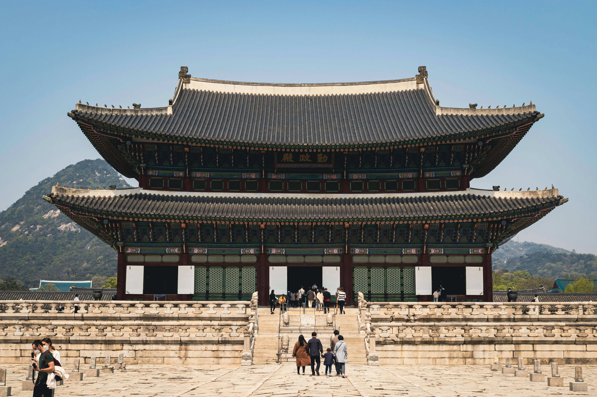

Japan
Kamakura
Kamakura (鎌倉) is a coastal town in Kanagawa Prefecture, less than an hour south of Tokyo. The town became Japan's political center, when Minamoto Yoritomo chose it as the seat for his new military government in the late 12th century.
The Kamakura government continued to rule Japan for over a century, first under the Minamoto shogun and then under the Hojo regents.
After the decline of the Kamakura government in the 14th century and the establishment of its successor, the Muromachi government in Kyoto, Kamakura remained the political center of eastern Japan for some time before losing its position to other cities.
Hiroshima
Hiroshima (広島) is the principal city of the Chugoku Region and home to over a million inhabitants.
When the first atomic bomb was dropped over Hiroshima on August 6, 1945, the city became known worldwide for this unenviable distinction. The destructive power of the bomb was tremendous and obliterated nearly everything within a two kilometer radius.
After the war, great efforts were taken to rebuild the city. Destroyed monuments of Hiroshima's historical heritage, like Hiroshima Castle and Shukkeien Garden, were reconstructed. In the center of the city a large park was built and given a name that would reflect the aspirations of the re-born city: Peace Memorial Park.

Osaka
Osaka (大阪, Ōsaka) is Japan's second largest metropolitan area after Tokyo. It has been the economic powerhouse of the Kansai Region for many centuries. Osaka was formerly known as Naniwa. Before the Nara Period, when the capital used to be moved with the reign of each new emperor, Naniwa was once Japan's capital city, the first one ever known.
In the 16th century, Toyotomi Hideyoshi chose Osaka as the location for his castle, and the city may have become Japan's political capital if Tokugawa Ieyasu had not terminated the Toyotomi lineage after Hideyoshi's death and established his government in distant Edo (Tokyo).
South Korea

The Five Royal Palaces of Seoul
The five palaces of Seoul are royal palaces of the Joseon Dynasty and symbols of Korea’s culture and history. Each palace has its unique charms: Gyeongbokgung Palace, the royal residence; Changdeokgung Palace, a UNESCO World Heritage Site inscribed in 1997 with remarkable beauty; Deoksugung Palace, a combination of Korean aesthetics and Western architecture; Changgyeonggung Palace, now restored from the damages caused by Japanese occupation; and Gyeonghuigung Palace, humble and simple.
Dongdaemun Design Plaza
This cultural space and design platform is a hub of exhibitions, fashion shows, conferences, and events both domestic and international. Its distinct curves and mega-sized roof are a triumph of 3D asymmetrical architecture. This design, which symbolizes Dongdaemun area in the state of flux, was designed by the British Iraqi architect Zaha Hadid. The area includes Dongdaemun Market and other interesting sights.

Bukchon Hanok Village
Surrounded by Gyeongbokgung Palace, Changdeokgung Palace and Jongmyo Shrine, Bukchon Hanok Village is home to hundreds of traditional houses, called hanok, that date back to the Joseon dynasty. The name Bukchon, which literally translates to "northern village," came about as the neighborhood lies north of two significant Seoul landmarks, Cheonggyecheon Stream and Jongno. Today, many of these hanoks operate as cultural centers, guesthouses, restaurants and tea houses, providing visitors with an opportunity to experience, learn and immerse themselves in traditional Korean culture. As Bukchon Hanok Village is an actual neighborhood with people's homes, visitors are advised to be respectful at all times while looking around.
Thailand
The Grand Palace
Every visitor to Bangkok should see the magnificent buildings within the Grand Palace compound to get a feeling of the grandeur architectural style. Since the founding of Bangkok as the Nations capital by King Rama I, The grand palace has been the major architectural symbol of The Thai Royal family. In the present time, The Royal Family resides at Chitralada Palace while The Grand Palace is used for ceremonial purposes.
Erawan Shrine and Museum
Erawan shrine is a Hindu shrine located in front of Grand Hyatt Erawan Hotel at the Ratchaprasong intersection on Ratchadamri Road in Lumphini Sub-district, Pathum Wan District, Bangkok. Both Thai people and foreigners like to visit this place and worship this famous holy object. A lot of group tours from many countries are arranged specifically to pay homage to Phra Phrom here. The history of this sacred shrine dated back to 1951 when Police General Phao Sriyanond assigned the establishment of Erawan Hotel at the Ratchaprasong intersection to receive foreign guests. It is said that during the first period of the establishment, there were a lot of mishaps.

Wat Pho
It is a first class royal Temple and is an ancient temple, which King Rama I the Great ordered to be built for monks to study Dharma.
This is the temple of the reign of King Rama I the Great. During the reign of King Rama III, the King graciously renovated Wat Pho and brought academic texts in different fields to be inscribed around the temple in order to disseminate knowledge to the people. It is considered as the first university of Thailand. In addition, Wat Pho has a large reclining Buddha image that was constructed during the reign of King Rama III of masonry, mortar, and covered with gold.